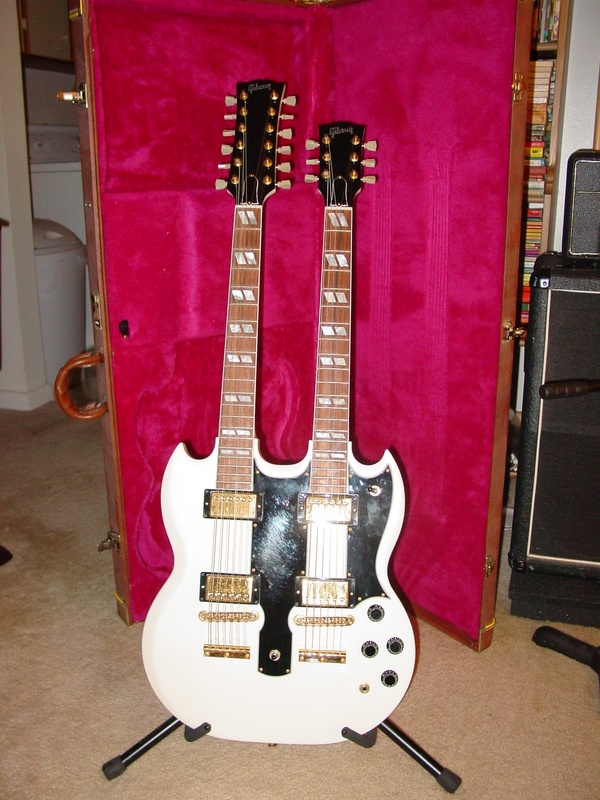
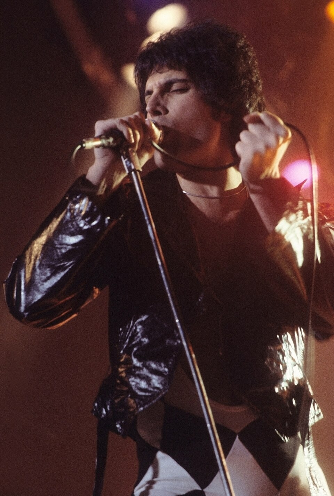
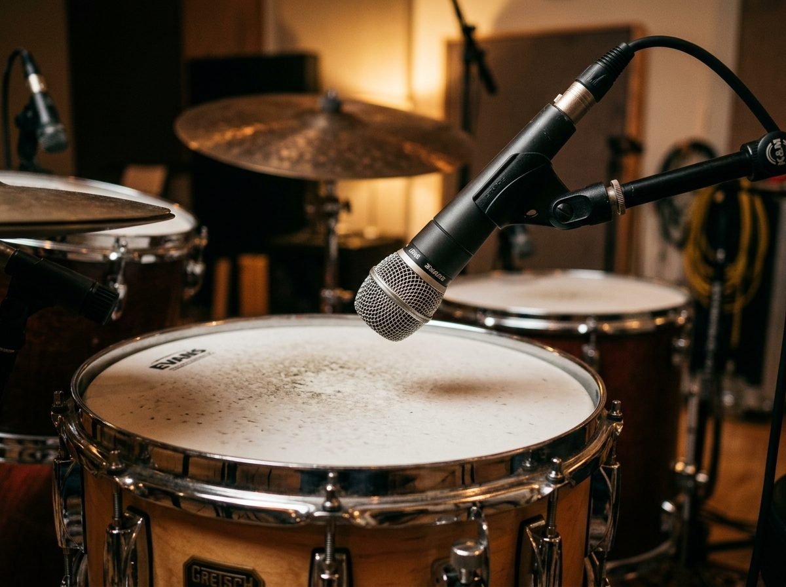

From Olympic Studios and Trident to Abbey Road. Master the high-headroom analog consoles, 24-track 2-inch tape machines, multi-mic drum capture, and heavy valve distortion that shaped rock history.
Examiners assess your ability to connect musical composition (AO3) with specific recording technology and studio engineering decisions (AO4).
🎸 AO3: Musical & Stylistic Features
✓ Heavy overdriven pentatonic and blues-based guitar riffs
✓ Powerful unyielding drum grooves with heavy snare backbeats
✓ Operatic, dynamic, and falsetto rock vocals (Mercury, Plant)
✓ Extended theatrical guitar solos and multi-part compositions
🎛️ AO4: Studio Capture & Technology
✓ 16 and 24-track 2-inch tape machines (Studer A80, Ampex)
✓ Multi-mic drum tracking: close mics, overheads, ambient room
✓ EMT 140 plate reverb, tape flanging, and phasing
✓ Neve 1073 preamps, Helios consoles, and 1176 FET compression
Historical Context • 1968 to Late 1970s
From 1950s Blues to 1970s Arena Rock
1950s Foundation
Blues Acceleration
Sped-up 12-bar blues riffs originally played by Chuck Berry were electrified and amplified by British bands (Cream, Hendrix, Led Zeppelin) into crushing power-chord anthems.
Amplification Boom
The 100-Watt Stack
As audiences grew from clubs to massive sports arenas, Jim Marshall developed 100W valve heads and 4x12 cabinets to deliver unprecedented acoustic volume and natural distortion.
Production Leap
Multi-Track Freedom
The jump from 4-track to 16/24-track tape liberated producers from live-in-the-room limitations, enabling endless vocal stacking, double-tracked guitars, and stereo panning.
Artist 1 of 4 • Dynamic Contrast & Ambient Drums
Led Zeppelin & Jimmy Page

London, UK • Formed 1968Olympic Studios / Headley Grange"Whole Lotta Love" (1969)
"Light and Shade" & Distance Micing
Production Genius: Guitarist/producer Jimmy Page pioneered "distance makes depth"—placing mics yards away from Marshall cabs and drum kits to capture room ambience rather than dry direct signals.
Signature Techniques: John Bonham's massive drum sound recorded with Beyer M160 ribbon mics in the stone stairwell of Headley Grange; psychedelic backwards tape echo and stereo panning sweeps.
Artist 2 of 4 • Operatic Stacks & The Guitar Orchestra
Queen: 24-Track Vocal Stacking

London, UK • 1970–PresentTrident & Rockfield StudiosAlbum: A Night at the Opera (1975)
"Bohemian Rhapsody" (1975)
Technological Milestone: Recorded over three weeks, the operatic section required over 180 separate vocal overdubs bounced across 24-track tape until the 2-inch tape became so worn it turned transparent!
Brian May's Guitar Orchestra: Homemade "Red Special" guitar plugged into a cranked Vox AC30 and a treble booster, multi-tracked into rich four-part contrapuntal harmonies mimicking a symphony orchestra.
Artist 3 of 4 • Theatrical Glam Rock & Trident Studios
Musical & Visual Contrast: Glam rock combined hard rock energy with effeminate, androgynous fashion (sequins, platform boots, make-up) and infectious melodic pop hooks.
Trident Sound: Mick Ronson's Les Paul through a Marshall 200W with a cocked wah-wah pedal for a mid-boosted, nasal lead tone; tight dry drums and lush Trident A-Range console EQ.
Artist 4 of 4 • Power Chords & Early Synths
The Who: Synthesizer Integration
London, UK • Formed 1964Olympic Studios (Glyn Johns, Producer)Album: Who's Next (1971)
"Won't Get Fooled Again" / "Baba O'Riley"
Unique Contribution: Pete Townshend was among the first rock composers to weave modular analog synthesizers (ARP 2600, EMS VCS3) and Lowrey organ repeaters into hard-hitting rock arrangements.
Glyn Johns Production: Iconic 3-mic drum capture for Keith Moon, powerful open chord ring-outs on Hiwatt amp stacks, and John Entwistle's distorted treble-heavy bass tone.
Core Gear • Solidbody Guitars & High-Gain Amps
The Rock Guitar Sound: Les Paul & Marshall
🎸 Gibson Les Paul vs. Fender Stratocaster
The dual humbucking pickups of the Gibson Les Paul provided thick, noise-cancelling sustain with rich mid-range warmth. The Fender Stratocaster provided cutting glass-like single-coil treble bite.
🔊 The Marshall 100W "Plexi" Stack
Four EL34 output valves pushed into saturation, connected to two 4x12 cabinets loaded with Celestion Greenback speakers. This created the definitive crunchy, compressed rhythm tone of Classic Rock.
The Iconic 100W Marshall Valve Amp Stack
Studio Revolution • 16 & 24-Track Tape
The Multi-Track Leap: Studer A80 & 2-Inch Tape
By the early 1970s, recording standards transformed from 4-track and 8-track machines to 16-track and 24-track 2-inch tape recorders like the legendary Studer A80 and Ampex MM1200.
★Overdubbing: Musicians could record their parts independently without destroying original takes.
★Track Bouncing: Bouncing 6 background vocal tracks down to a stereo pair to free up tracks for lead guitars and synthesizers.
★Tape Speed: Recorded at 15 or 30 inches per second (ips) for maximum high-frequency response and minimal noise.
Studer Multi-Track Reel-to-Reel Tape Machine
Studio Engineering • Multi-Mic Drum Tracking
Close-Micing & Drum Isolation
Unlike 1950s single-overhead setups, 1970s engineers deployed dedicated microphones on every shell to shape modern punch and low-end definition:
•Snare Drum: Shure SM57 angled 1-2 inches above the rim, often with a bottom mic for snare wire buzz.
•Kick Drum: AKG D12 dynamic mic placed inside the shell near the beater for low-end thump.
•Toms: Sennheiser MD421 dynamic mics on rack and floor toms.
•Overheads: Matched stereo pair (AKG C414 or Neumann KM84) capturing cymbal sheen in spaced pair or X/Y.
•Gobo Screens: Heavy acoustic baffles placed around the kit to prevent drum bleed into vocal mics.

Studio Close-Micing & Acoustic Isolation
Studio Processing • Plate Reverb & Tape Flanging
Analog Effects: The EMT 140 Plate
🌊 EMT 140 Plate Reverb
Weighing over 600 lbs, a massive cold-rolled steel plate was excited by a transducer. Contact pickups captured vibrations, generating a dense, bright decay that gave rock snare drums and vocals expansive depth.
🌀 Tape Flanging & Phasing
Sending audio across two synchronized tape decks and gently pressing a finger against the reel's flange created subtle time delays that produced jet-plane comb-filtering sweeps (heard on Zeppelin drum and vocal breakdowns).
EMT 140 Cold-Rolled Steel Plate Reverb
Mixing Hardware • Analog Consoles & Bus Compression
Neve Consoles & The UREI 1176 FET
Rupert Neve & Trident Consoles
Custom transformer-balanced consoles with Class-A transistor circuitry (such as the Neve 1073 preamp) introduced musical harmonic saturation when pushed hard, providing low-end punch and smooth high end.
⚡ UREI 1176 FET Peak Limiter
Ultra-fast attack times (20 to 800 microseconds) allowed engineers to grab aggressive drum transients and vocal peaks instantly. Famous for the "all-buttons-in" mode for explosive room mic compression.
 The Iconic 100W Marshall Valve Amp Stack
The Iconic 100W Marshall Valve Amp Stack
 Studer Multi-Track Reel-to-Reel Tape Machine
Studer Multi-Track Reel-to-Reel Tape Machine
 EMT 140 Cold-Rolled Steel Plate Reverb
EMT 140 Cold-Rolled Steel Plate Reverb
.png) UREI 1176 Solid-State FET Peak Limiter
UREI 1176 Solid-State FET Peak Limiter